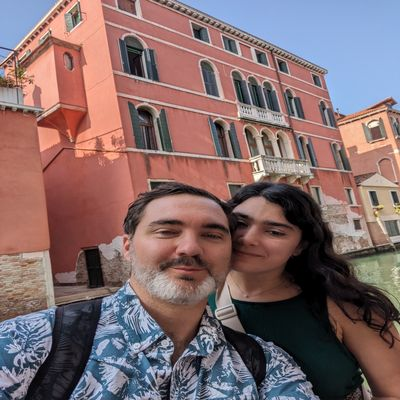

The barrier to building software just collapsed
Sample post. The constraint is imagination now.
Builds systems for money, data, and ideas. Automates the tedious stuff.

Open to problemsA Jupyter pipeline that replaced a 20-hour manual reporting cycle and made product reporting something clients act on.
The method behind 50+ rollouts with C-suite and operations teams.
Athletics revenue and attendance on one screen.
This site. Next.js, Supabase, and an admin panel so posts ship without a deploy.
Sample post. The constraint is imagination now.
Sample post. The relationship is won after the sale.
Sample post. Constraints and detours.
Fintech by day. Builder by nature. Runner by choice.
I help banks understand and grow their customer base through data, analytics, and product strategy. The real thing that drives me is the moment an idea stops being abstract and becomes something real.
Data, automation, or an idea that keeps coming back. Send it over.
Get in touch Resume